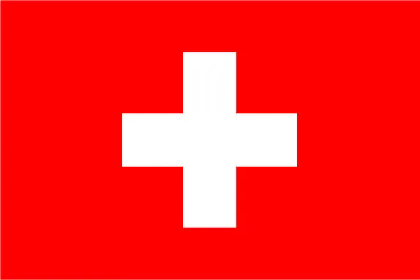
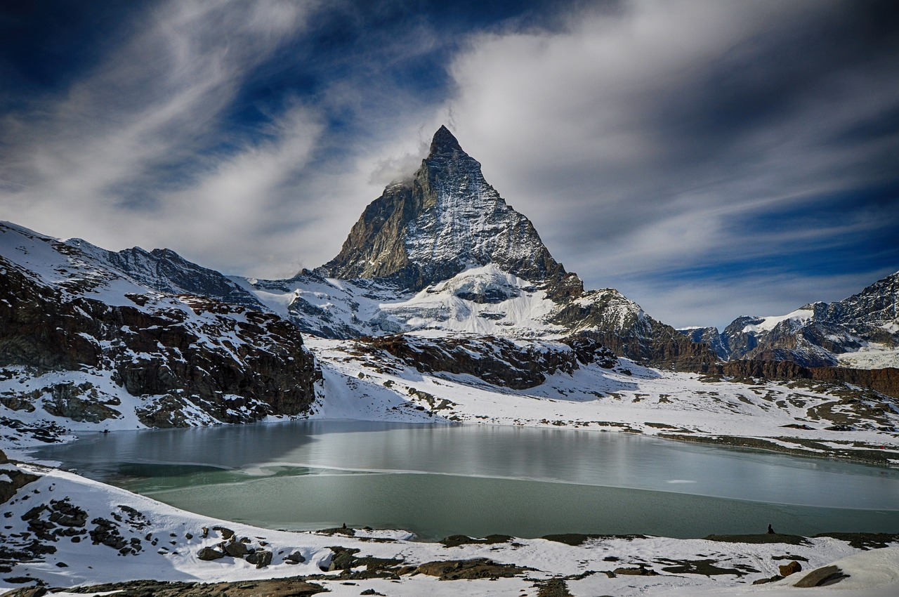

Suiça
Introdução
A Suíça é um país sem costa marítima cujo território é dividido geograficamente entre o Jura, o Planalto Suíço e os Alpes, somando uma área de 41 285 km². A população suíça é de aproximadamente 8,5 milhões de habitantes e concentra-se principalmente no planalto, onde estão localizadas as maiores cidades do país. Entre elas estão as duas cidades globais e centros económicos de Zurique e Genebra. A Suíça é um dos países mais ricos do mundo relativamente ao PIB per capita calculado em 75 835 dólares americanos em 2011. Zurique e Genebra foram classificadas como as cidades com melhor qualidade de vida no mundo, estando em segundo e terceiro lugar respectivamente e a Suíça como o melhor país para nascer em 2013. A suiça possui 4 línguas ofciais.

Participação Internacional
A Confederação Suíça tem uma longa história de neutralidade, não estando em estado de guerra internacionalmente desde 1815. O país é sede de muitas organizações internacionais como o Fórum Económico Mundial, a Cruz Vermelha, a Organização Mundial do Comércio, a União Postal Universal, a Organização Internacional para Padronização e do segundo maior Escritório das Nações Unidas. Em nível europeu, foi um dos fundadores da Associação Europeia de Comércio Livre e é parte integrante do Acordo de Schengen. Em termos desportivos, o COI, a FIFA, a UEFA, a FIBA e a FIVB possuem as suas sedes localizadas no território suíço.

Línguas e identidade
A Suíça é constituída por quatro principais regiões linguísticas e culturais: alemão, francês, italiano e romanche. Por conseguinte, os suíços não formam uma nação no sentido de uma identidade comum étnica ou linguística. O forte sentimento de pertencer ao país é fundado sobre o histórico comum, valores compartilhados (federalismo, democracia directa e neutralidade)[10] e pelo simbolismo Alpino.
°Português: Esquecer é uma necessidade. A vida é uma lousa, em que o destino, para escrever um novo caso, precisa de apagar o caso escrito.
°Alemão: Vergessen ist eine Notwendigkeit. Das Leben ist eine Tafel, in der das Schicksal, um einen neuen Fall zu schreiben, den schriftlichen Fall löschen muss.
Etimologia
Confœderatio Helvetica (CH) é a designação oficial em latim do país. O termo Helvética vem da palavra latina Helvetier que por sua vez provém do nome da antiga tribo celta dos Helvécios. A Revolução Suíça de 1798 foi a primeira contra a supremacia dos fundadores da Antiga Confederação Suíça: Uri, Schwyz, Unterwalden e as cidades de Lucerna, Zurique e Berna. As diferentes línguas faladas obrigaram a criar um nome único em latim, língua maioritariamente falada na Europa naquela época. Nos tempos atuais, o termo Helvetia não é utilizado para caracterizar oficialmente a Suíça. Contudo, este nome pode ser encontrado em selos e moedas suíços. "C.H." (Confœderatio Helvetica) são as iniciais encontradas nos autocolantes para os carros e no domínio da Internet (.ch) desde 1995.

Geografia
A Suíça é um país localizado no centro da Europa de coordenadas 47,00 N e 8,00 E. A sua área total é de 41 285 km² em que 1 520 km² são cobertos de água. Faz fronteira com a França a Oeste, a Alemanha a Norte, a Áustria e o Liechtenstein a Leste e com a Itália a Sul. De uma maneira geral, pode-se dividir a Suíça em três regiões geográficas: os Alpes, o planalto e o Jura.O planalto suíço, denominado como plateau, ocupa um terço da área do país e aí mora cerca de dois terços da população naquela área geográfica. A densidade populacional é de cerca de 450 pessoas por quilómetro quadrado. Vai desde o Lago Leman na fronteira francesa, atravessando o centro da Suíça e terminando no Lago de Constança, nas fronteiras com a Alemanha e a Áustria. Tem uma altitude média de 580 metros. O plateau suíço é atravessado por três grandes rios: o Ródano, o Reno e o Aar. O Sul e o centro-Sul da Suíça são dominados pela cadeia montanhosa alpina enquanto que o restante é uma zona plana exceptuando-se um faixa ao longo da região Noroeste que é dominada pelo Jura.

Cidades mais populosas da suiça
| Posição |
Localidade |
População |
| 1 |
Zurique |
372 047 |
| 3 |
Basileia |
169 536 |
| 4 |
Berna |
133 920 |
| 5 |
Lausanne |
127 821 |
| População Total |
8,5 milhões |